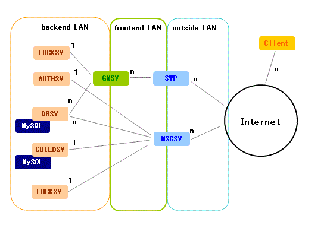
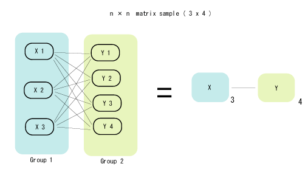

mm-suite clustering architecture
You can get more server processing power by using many inexpensive and
ordinary PC server machines.
In tipical cases, the machines are connected to each other
as shown below:

You see a letter "n" in this diagram, that means
you can put more machines together in addition to this case.
Note that when you have N machines in group X and M machines
in group Y, you will have N * M connections between group X and Y
because the machines are connected to each other in matrix way.
In case below, because you have 3 machines in group X,
and 4 machines in group Y, so you will see 3 * 4 = 12 connections.

Each servers are processing different tasks.
What kind of tasks are processed in each component will be
listed here:
- GMSV
All game rules and logics are processed by this component.
We can say the rules and logics are the content of the game,
so some say GMSV as "content server" in other words.
If you want to change the content, you have to modify GMSV
source code or configuration information read by GMSV.
So far as our experience, the GMSV component is the only
component that crashes or stopped by men often,
because they have a new code fragments in each content update
without precise debugging.
- SWP(SwitchingProxy)
Connection switching proxy server. This component is
included in VCE package. So this is not originally made
in mm-suite. SWP is responsible for controlling data stream,
and session management, and SSL decoding.
You can maximize GMSV performance by using SWP.
One SWP can process 20Mbit/sec in P3 800MHz machines.
- AUTHSV
User authorization server.
Only thing done by this component is to check the
online player can log in to the GMSV or not.
We provide this component separated from other ones
because in almost all cases you have to use
your own user-database which is already made and maintained.
If you want to out-source the authorization task,
you will put a authorization module provided by other company
to AUTHSV code.
- DBSV
Store character data and other game information.
We're using MySQL for the task, not NFS because of the performance.
DBSV assumes that authorization is done by AUTHSV before
accessing DBSV.
- MSGSV
Instant messaging server.
This server can also store off-line messages, which will be
sent to the destination user when the destination user
got online.
Startup sequence
Here is a senario to start-up all mm-suite components
from the beggining of the world.
In this case we assume you have all machines switched on and
proper OSs are installed, and working.
- Initialize AUTHSV. If AUTHSV uses other subsystems,
you have to start them.
- Check MySQL is running. MySQL is used by DBSV.
- Start LOCKSV, DBSV.
- Start GMSV, MSGSV.
- Start all SWPs.
If the server crashes
Basically, when the mm-suite component(server) detects back-end service
got down, it automatically shut down or start re-connecting with some interval.
DBSV will get shut down if MySQL is down.
GMSV will also get shut down when DBSV and LOCKSV got down.
MSGSV will also get shut down when DBSV got down.
In other cases, the servers will start re-connection to backends.
State file and remote monitoring
All mm-suite components prints out current statistics in a file.
You can configure where to save the file in config files of each components.
You can know what's happening on the server by retrieving status file
through network.
Format of each status files are uni-formed, and that is described in
procfile-en.html.
Return to INDEX
Copyright 2000-2005 CommunityEngine Inc. All rights reserved.